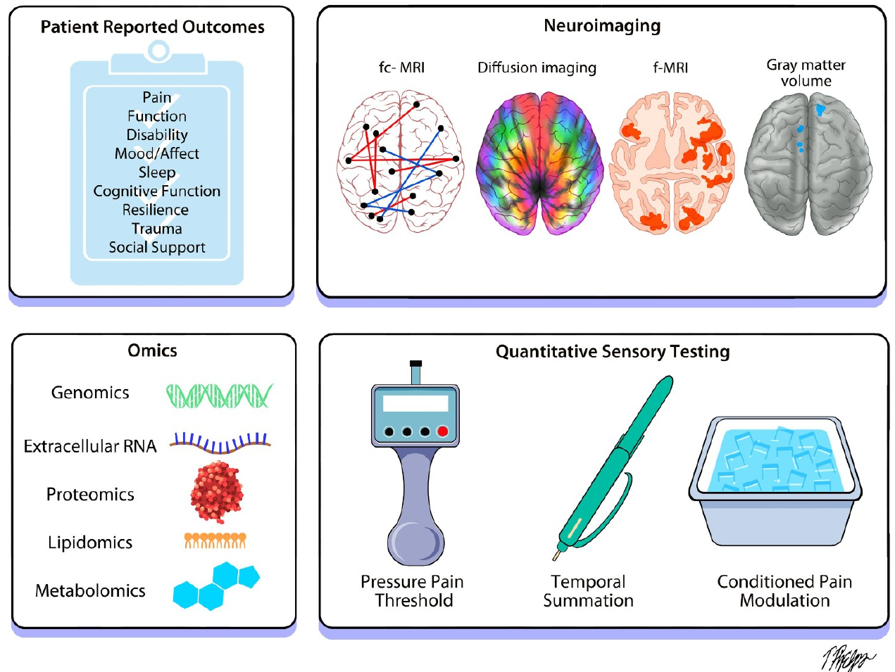

A2CPS follows people scheduled for total knee arthroplasty or thoracic surgery from before their operation to a year after, collecting psychosocial, sensory, functional, omics and brain-imaging measures at each stage. The goal: biomarkers and signatures that predict who will, and who will not, develop chronic pain after surgery.
Recruitment closed on December 31, 2025. Participants were screened and enrolled through two multi-site clinical centers, one spanning Michigan and one in the Chicago area, under a single central IRB at the University of Iowa. Final 3-month visits were completed in April 2026 and the last 6-month surveys in July 2026.
Knee osteoarthritis patients undergoing total knee replacement. Physical function and movement-evoked pain are measured with the five-times sit-to-stand and 10-meter walk tests; knee-specific disability with the KOOS-12.
n = 1,916 consented
Patients undergoing video-assisted thoracoscopic or open thoracic surgery. Movement-evoked pain is measured with deep breathing and forceful coughing; disability with the Danish Thoracic Surgery Questionnaire.
n = 727 consented
Every participant contributes to several modalities, so measures can be linked person by person and across time. Counts are participants in public Release 2.0.0 (baseline data).
Brief Pain Inventory, Michigan Body Map, KOOS-12, PROMIS physical function, sleep and fatigue, GAD-7, PHQ-8, pain catastrophizing, fear-avoidance, resilience, social support, adverse childhood experiences, TAPS substance use, opioid use and misuse, physical activity, sensory sensitivity, Big Five personality, comorbidities, expectations.
~1,400 participantsPressure pain thresholds at the surgical site (index) and deltoid (remote); mechanical temporal summation with a punctate stimulus; conditioned pain modulation as the change in shoulder pressure pain threshold after cold-water immersion.
~1,400 participantsFive-times sit-to-stand and 10-meter walk with time to completion (knee cohort); three deep breaths and three forceful coughs (thoracic cohort). Pain is rated before and after each task to quantify movement-evoked pain.
~1,400 participantsGenotyping arrays, extracellular RNA sequencing, Luminex cytokine panels and mass-spectrometry proteomics, and mass-spectrometry lipidomics and metabolomics, generated by three omics data centers.
559 – 1,113 participants by platformT1-weighted structure, diffusion-weighted imaging, resting-state fMRI and pressure-cuff pain-evoked fMRI. Released with extensive preprocessing and image-derived phenotypes including FreeSurfer measures, connectivity, and brain age.
1,017 participantsDiagnoses, medications, procedures and labs from the clinical record, plus HEAL-harmonized demographic forms in English and Spanish.
520 participants (EHR)Participants complete questionnaires remotely before and up to 12 months after surgery, and attend three clinical visits: one before surgery and two after. Clinical visits include sensory testing, blood draws for omics, functional assessments and MRI. Daily pain ratings in the first days after surgery capture the acute pain trajectory, and the primary chronic-pain outcome is assessed at 6 months.
A2CPS pre-registered a set of primary biomarkers with strong prior evidence in humans, each tested for its ability to predict chronic post-surgical pain. Secondary and exploratory biomarkers, including genome-wide, transcriptome-wide and brain-wide measures, are optimized in a discovery and validation framework.

| General pain intensity | Brief Pain Inventory, whole body |
| Local pain intensity | Modified BPI, surgical site |
| Widespread body pain | Michigan Body Map |
| Acute pain trajectory | Daily single-item pain / interference after surgery |
| Disability | KOOS-12 (knee); Danish Thoracic Surgery Questionnaire (thoracic) |
| Physical function | PROMIS Physical Function 8b; 5×STS & 10 m walk (knee) |
| Movement-evoked pain | 5×STS & 10 m walk (knee); coughing & deep breathing (thoracic) |
| Anxiety | GAD-7 |
| Depressive symptoms | PHQ-8 |
| Pain catastrophizing | Pain Catastrophizing Scale 6 |
| Fear of movement | Fear Avoidance Beliefs Questionnaire, physical activity |
| Sleep | PROMIS Sleep Disturbance 6a; sleep duration |
| Trauma history | Adverse Childhood Experience questionnaire |
| Resilience | Pain Resilience Scale |
| Social support | PROMIS Instrumental & Emotional Support 6a |
| Cognitive dysfunction | Multidimensional Inventory of Subjective Cognitive Impairment |
| C-reactive protein | Proteomics / Luminex |
| TNF-α, IL-6, IL-12 | Proteomics / Luminex |
| Soluble glycoprotein 130 | Proteomics / Luminex |
| COMT haplotype (rs4680) | Genotyping array |
| Mu-opioid receptor (rs1799971) | Genotyping array |
| ABCB1 (rs1045642) | Genotyping array |
| BDNF (rs6265, rs1491850) | Genotyping array |
| Pressure pain threshold | Pressure algometer at surgical site |
| Temporal summation | Punctate stimulus (Neuropen) at surgical site |
| Conditioned pain modulation | Change in shoulder PPT after noxious cold-water immersion |
| Gray matter volume of medial prefrontal cortex | T1 |
| Structural integrity in amygdala–NAc–mPFC network | Diffusion-weighted imaging, tractography |
| Core DMN (vmPFC/CCC) – NAc / ventral striatum | Resting-state fMRI |
| Core DMN – somatosensory (dpINS / S1) | Resting-state fMRI |
| Core DMN – anterior / middle insula | Resting-state fMRI |
| Hub disruption | Resting-state fMRI |
| Evoked response in the Neurologic Pain Signature | Task fMRI (pressure cuff) |
| Fronto-striatal descending modulation & self-regulation (vmPFC, NAc) | Optimized markers (SIIPS) |
Full list and rationale: A2CPS study details and Sluka et al. 2023.
| Layer | Assay | Center |
|---|---|---|
| Genetics | SNP genotyping array; polygenic scores | UC San Diego |
| Transcriptomics | RNA-seq of extracellular RNA (exRNA) | UC San Diego |
| Proteomics | Luminex cytokine panels; mass-spectrometry proteomics | PNNL |
| Lipidomics | Mass spectrometry | UC Davis |
| Metabolomics | Mass spectrometry | UC Davis; Wake Forest |
| Sequence | What it measures | Derivatives |
|---|---|---|
| T1-weighted | Brain structure | Cortical thickness, gray-matter density, FreeSurfer measures, brain age |
| Diffusion (DWI) | White-matter microstructure | Tractography, tract integrity |
| Resting-state fMRI | Functional connectivity | Network connectivity, hub disruption |
| Task fMRI (cuff pain) | Pain-evoked brain response | Neurologic Pain Signature, SIIPS, fronto-striatal markers |
All images are extensively preprocessed and quality-checked by the Data Integration and Resource Center. See the starter kits for how the derivatives are organized.
All baseline (pre-surgery) data are released publicly on a rolling schedule; external releases follow internal releases by six months. Post-baseline data will be released after the study concludes and the primary papers are published. Release numbers follow a three-level scheme: new participants (major), new data types (minor), and corrections (patch).
| Release | Contents | Participants |
|---|---|---|
| 1.0.0 | Baseline data, surgery on or before Feb 28, 2023 (603 knee, 204 thoracic). Released Dec 2024. | 807 |
| 1.1.0 | Adds proteomics, exRNA and EHR for release 1.0.0 participants. | 807 |
| 2.0.0 | Baseline data, surgery on or before Feb 29, 2024 (1,043 knee, 358 thoracic). Fall 2025. | 1,401 |
Participants with each data type in the public release.
A2CPS is an NIH Common Fund program bringing together clinicians, biologists, neuroimagers and statisticians across the United States, with advisors and patient representatives.
MCC1 in Michigan and MCC2 in the Chicago area, with nine recruitment sites in total, enroll participants and run every clinical visit.
UC San Diego (genetics, exRNA), Pacific Northwest National Laboratory (proteomics) and UC Davis / Wake Forest (lipidomics, metabolomics).
Curates, harmonizes and preprocesses all data, builds the starter kits and documentation, and prepares public releases.
Protocol, central IRB, site training and certification, and study monitoring.
Sluka et al. 2023, PAIN: Predicting chronic postsurgical pain: current evidence and a novel program to develop predictive biomarker signatures.
Berardi et al. 2022, Frontiers in Medicine: Multi-site observational study to assess biomarkers for susceptibility or resilience to chronic pain: the A2CPS study protocol.